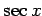
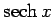
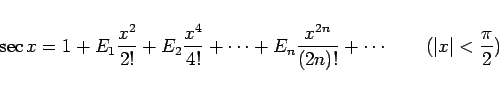

Inhalt Index DeskTop Bronstein

 Unendliche Reihen Reihen mit konstanten Gliedern Einige spezielle Reihen Bernoullische und Eulersche Zahlen
Unendliche Reihen Reihen mit konstanten Gliedern Einige spezielle Reihen Bernoullische und Eulersche Zahlen


Die EULERschen Zahlen Bk treten bei Potenzreihenentwicklungen spezieller Funktionen auf, z.B. bei der trigonometrischen Funktion  und der hyperbolischen Funktion . Die EULERschen Zahlen können wie folgt definiert
|  | (7.62a) |
und durch Koeffizientenvergleich bezüglich der Potenzen von x ermittelt werden.